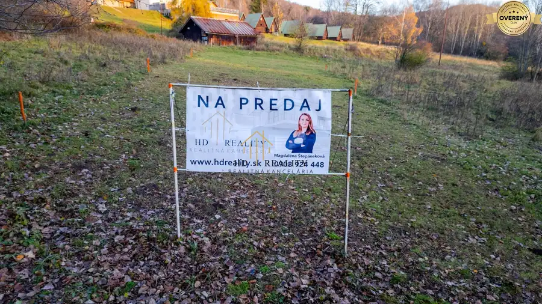
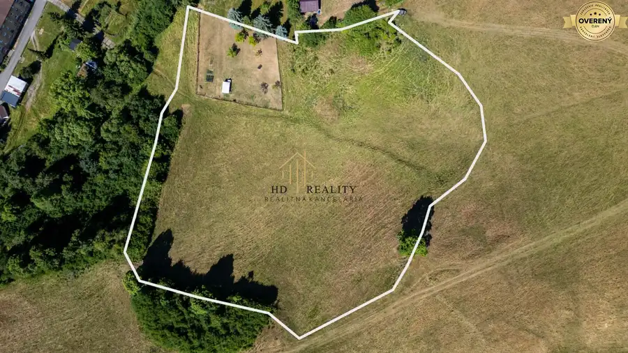
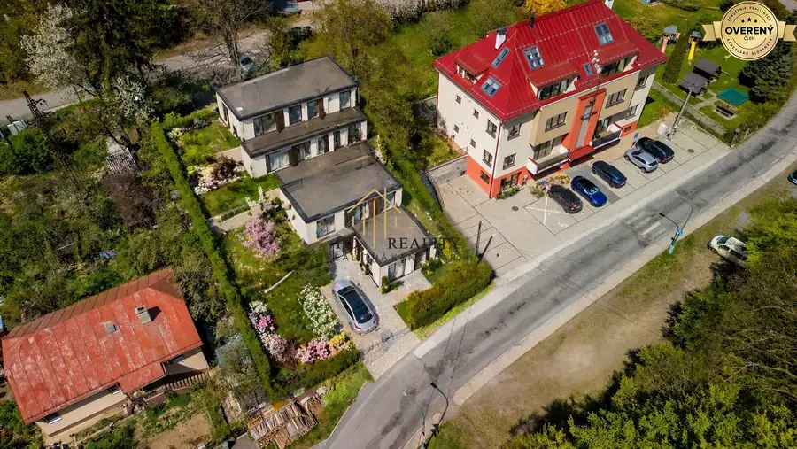

Predaj, rekreačný pozemok v blízkosti tajchov
Štiavnické Bane
- Plocha642 m²
- Poschodie0.
- Vlastníctvoosobné
O nehnuteľnosti
Hľadáte ideálne miesto pre výstavbu rekreačnej chaty alebo rodinného domu v srdci prírody?
HD reality ponúka na predaj pozemok s celkovou výmerou 642 m² v malebnej obci Štiavnické Bane
, jednej z najvyhľadávanejších
rekreačných lokalít v okolí Banskej Štiavnice.
Pozemok sa nachádza v
krásnom horskom prostredí
s jedinečnou atmosférou a v blízkosti viacerých
priezračných štiavnických tajchov
. Terén je
čiastočne svahovitý a postupne prechádza do rovinatej časti
, čo ponúka zaujímavé možnosti
architektonického riešenia stavby (terasovitá chata, dom s výhľadom, rekreačný objekt).
Prístup na pozemok je z vrchnej časti — vstup je možné komfortne vyriešiť úpravou terénu alebo vybudovaním schodov.
✔
predbežný súhlas k výstavbe
✔
prístup po spevnenej obecnej ceste
✔
obecná voda a elektrina vedené pri pozemku
✔
možnosť napojenia na spoločný kanál v spodnej časti pozemku
Využitie pozemku
✅
vhodný na trvalé bývanie v pokojnej lokalite
✅
ideálne riešenie pre novú modernú chatu pri jazerách
✅
jednoduchá realizácia moderného kontajnerového bývania
✅
výborná investičná príležitosť
Vzhľadom na veľkosť a dispozíciu pozemku je možné osadiť aj dve kontajnerové jednotky, ktoré môžu slúžiť na krátkodobé prenájmy.
Rekreačné ubytovanie je v tejto lokalite veľmi žiadané
, čo robí z ponuky
zaujímavú investičnú možnosť s potenciálom stabilného výnosu.
Lokalita – Štiavnické Bane
Obec
Štiavnické Bane
patrí medzi
najkrajšie lokality Štiavnických vrchov
. Je známa predovšetkým svojimi
tajchmi (umelými jazerami)
, ktoré sú vyhľadávané na kúpanie, rybolov či oddych pri vode. Okolie ponúka množstvo
turistických a cyklistických trás, hubárčenie, zimné športy aj pokojný relax v prírode.
Veľkou výhodou je blízkosť
historickej Banskej Štiavnice
(cca 10 minút autom), ktorá ponúka
kompletnú občiansku vybavenosť, kultúrne podujatia a služby.
Ak hľadáte pozemok, kde sa spája príroda, voda, súkromie a investičný potenciál, táto ponuka je ideálnou voľbou – či už na vlastné bývanie, rekreáciu alebo podnikanie v oblasti ubytovania.
?
Telefón
:
?
Email:
Magdaléna Štepáneková – Váš partner v realitách
Parametre
| Rozloha pozemku | 642 m² |
|---|---|
| Poschodie | prízemie |
| Vlastníctvo | osobné |
| Voda | verejný vodovod |
| El. napätie | 230V |
| Plyn | nie |
| Kanalizácia | nie |
| Inžinierske siete | blízko |
| Orientácia | juhozápadná |
| Terén | svahovitý |
| Prístupová cesta | betónová cesta |
| Pripravené na výstavbu | predbežný súhlas |
| Dátum zverejnenia | 29. 1. 2026 |
Kde to je
Mohlo by Vás zaujímať

Pozemok10 88 000 €Predaj, pozemok vhodný na rekreačnú výstavbu, Počúvadlo Počúvadlo 838 m² Hľadáte ideálne miesto na rekreačnú chatu v blízkosti jazera? Máme pre vás skvelú ponuku! HD reality ponúka na predaj atraktívny pozemok s výmerou…
Pozemok10 89 000 €Predaj, pozemok Banská Belá Banská Belá 11819 m² HD reality ponúka na predaj výnimočný , rozľahlý pozemok s celkovou výmerou 11 819 m² v malebnej obci Banská Belá , vzdialenej len 5 km od…
Pozemok8 130 000 €Na predaj stavebný pozemok v centre mesta Banská Štiavnica Banská Štiavnica 884 m² Ponúkame na predaj výnimočnú ponuku stavebného pozemku, ktorá v sebe spája prestížnu lokalitu priamo v meste s okamžitou možnosťou realizácie vášho…